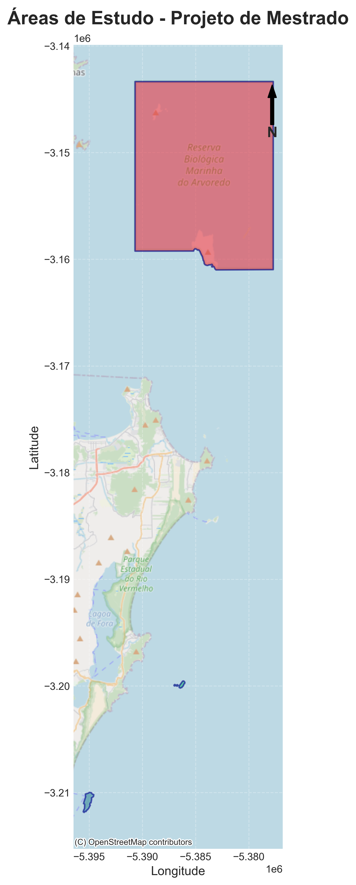
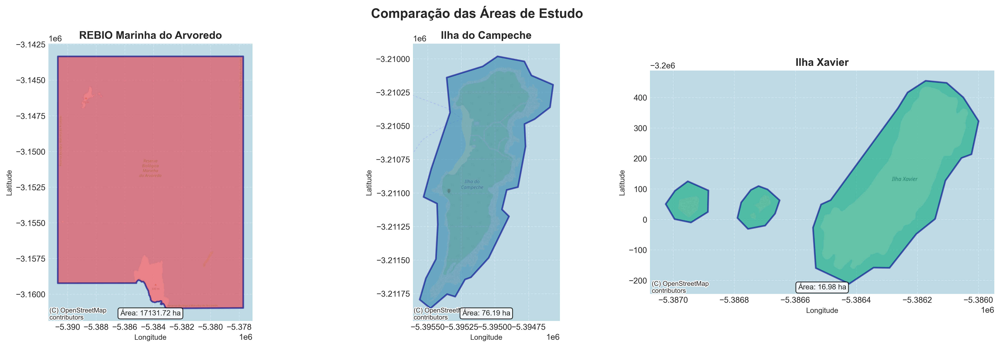
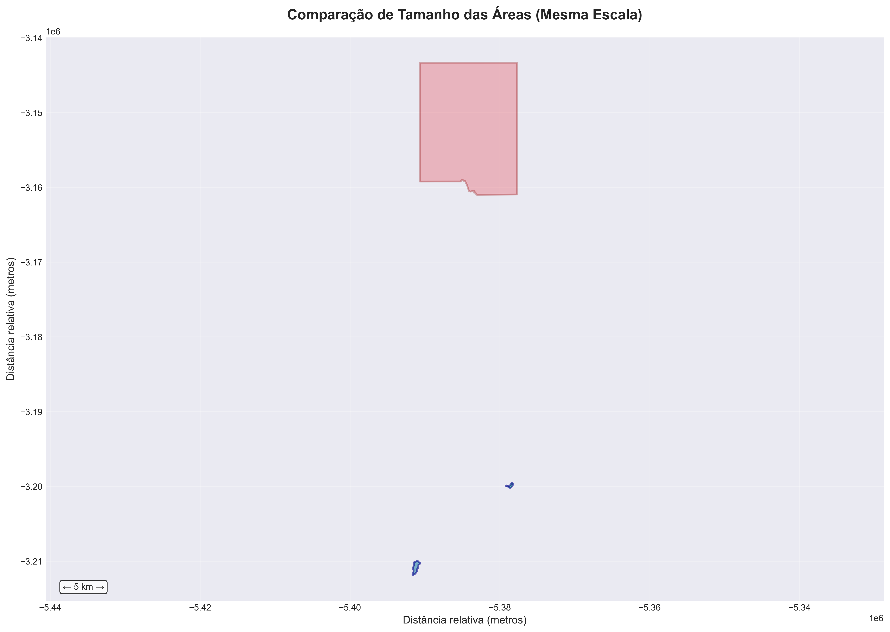
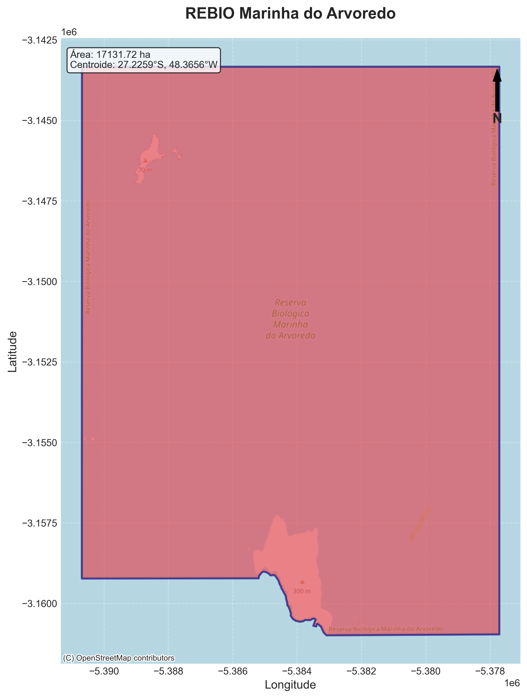
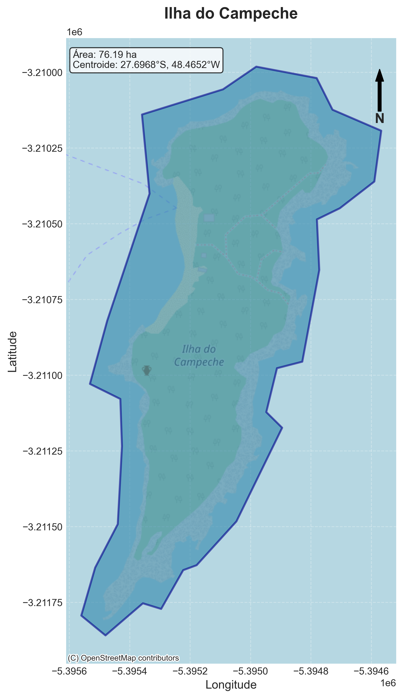
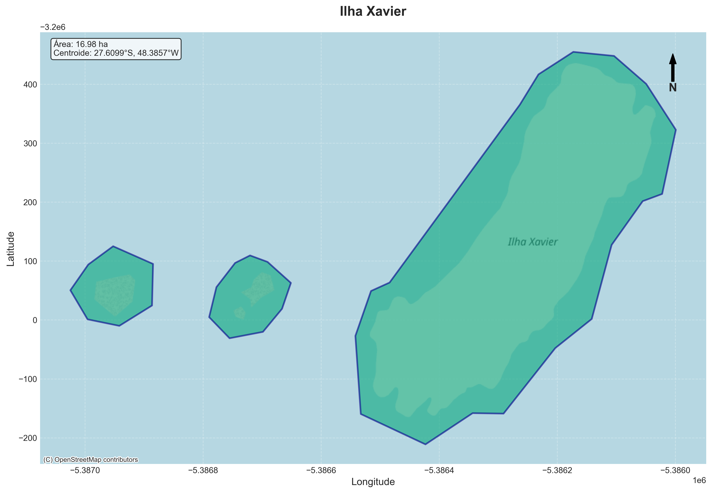

📋 Visão Geral do Projeto
🎯 Tema Principal
Avaliar a perda de biodiversidade marinha bentônica e o impacto de espécies invasoras
em três ilhas costeiras de Santa Catarina: REBIO Marinha do Arvoredo, Ilha do Campeche e Ilha Xavier.
🌊 Contexto e Relevância
As ilhas costeiras de Santa Catarina abrigam alta biodiversidade marinha, mas enfrentam pressões crescentes:
- 📉 Perda de biodiversidade devido a mudanças climáticas e atividades humanas
- 🦠 Invasões biológicas, especialmente pelo coral-sol (Tubastraea spp.)
- 🏖️ Pressão turística desordenada
- 🌡️ Aquecimento oceânico e alterações ambientais
🔬 Justificativa Científica
Este projeto é relevante porque:
- Biogeografia de Ilhas: As três áreas formam um gradiente natural perfeito para testar teorias ecológicas
- Conservação: REBIO Arvoredo é uma das principais áreas marinhas protegidas do Sul do Brasil
- Lacuna de Conhecimento: Estudos integrados sobre biodiversidade + invasões são escassos na região
- Aplicação Prática: Resultados subsidiarão manejo e conservação das áreas
📊 Diferenciais do Projeto
🎓 Abordagem Integrada
Combinação de estudos sobre biodiversidade nativa e espécies invasoras
📏 Gradiente Natural
Três áreas com variação em tamanho, isolamento e pressão antrópica
🗺️ Análise Espacial
Uso de GIS e mapeamento para caracterização precisa
💡 Hipóteses Principais
- Ilhas maiores e mais isoladas (REBIO Arvoredo) apresentam maior biodiversidade
- Ilhas próximas à costa (Campeche) são mais susceptíveis a invasões biológicas
- Há correlação negativa entre presença de invasoras e diversidade de espécies nativas
- Pressão turística está associada à maior ocorrência de espécies invasoras
🗺️ Áreas de Estudo
📍 Localização
Três ilhas costeiras de Santa Catarina, Brasil, formando um gradiente de tamanho, isolamento e pressão antrópica.
🔴 REBIO Marinha do Arvoredo
Coordenadas: 27°13'33"S, 48°21'56"W
Área: 17.131,72 hectares (171,32 km²)
Status: Unidade de Conservação Federal (REBIO)
Distância: ~15 km ao norte de Florianópolis
Características:
- Maior área de estudo
- Bem preservada e protegida
- Mergulho regulado
- Referência de conservação
- Alta biodiversidade
🔵 Ilha do Campeche
Coordenadas: 27°41'48"S, 48°27'55"W
Área: 76,19 hectares (0,76 km²)
Status: Patrimônio Arqueológico
Distância: ~1,5 km da costa leste de Florianópolis
Características:
- Área intermediária
- Alta pressão turística
- Próxima ao continente
- Macrófitas bem documentadas
- Fácil acesso
🟢 Ilha Xavier
Coordenadas: 27°36'36"S, 48°23'11"W
Área: 16,98 hectares (0,17 km²)
Status: Sem proteção específica
Distância: ~8 km ao nordeste de Florianópolis
Características:
- Menor área de estudo
- Menos estudada
- Pressão intermediária
- 3 polígonos (ilhotas)
- Acesso moderado
📊 Comparação Entre as Áreas
| Característica |
REBIO Arvoredo |
Ilha Campeche |
Ilha Xavier |
| Área (ha) |
17.131,72 |
76,19 |
16,98 |
| Tamanho Relativo |
~1.000x |
1x (referência) |
~1/4 |
| Distância da Costa |
~15 km |
~1,5 km |
~8 km |
| Proteção Legal |
UC Federal (REBIO) |
Patrimônio Arqueológico |
Sem proteção |
| Pressão Turística |
Baixa (regulada) |
Alta |
Moderada |
| Acessibilidade |
Difícil |
Fácil |
Moderada |
🎯 Justificativa da Seleção
Este conjunto de áreas permite avaliar variações em biodiversidade e invasões ao longo de gradientes de:
- Tamanho: Teoria de Biogeografia de Ilhas (relação área-diversidade)
- Isolamento: Distância como barreira para dispersão e colonização
- Pressão antrópica: Efeitos do turismo e distúrbios humanos
- Proteção: Efetividade de áreas marinhas protegidas
🎯 Objetivos do Projeto
🎯 Objetivo Geral
Avaliar a biodiversidade marinha bentônica e o impacto de espécies invasoras
em três ilhas costeiras de Santa Catarina (REBIO Arvoredo, Ilha do Campeche e Ilha Xavier),
identificando padrões de distribuição e fatores que influenciam a perda de biodiversidade e susceptibilidade a invasões.
🔬 Objetivos Específicos
1 Caracterizar Biodiversidade
Caracterizar e comparar a diversidade de espécies bentônicas nativas
nas três áreas de estudo, identificando padrões de distribuição e riqueza.
2 Mapear Invasoras
Mapear a distribuição e abundância de espécies invasoras,
com ênfase no coral-sol (Tubastraea coccinea e T. tagusensis).
3 Avaliar Impactos
Avaliar o impacto das espécies invasoras sobre a estrutura
e composição das comunidades bentônicas nativas.
4 Identificar Fatores
Identificar fatores ambientais e antrópicos que facilitam ou
limitam o estabelecimento de espécies invasoras.
5 Testar Hipóteses
Testar hipóteses sobre a relação entre tamanho de ilha, isolamento,
pressão antrópica e padrões de biodiversidade/invasão.
6 Propor Estratégias
Propor estratégias de manejo e conservação baseadas nos
resultados, subsidiando gestores das áreas protegidas.
❓ Perguntas de Pesquisa
🔵 Sobre Biodiversidade
- Como a biodiversidade bentônica varia entre as três ilhas?
- Áreas maiores apresentam maior diversidade de espécies?
- O isolamento da costa afeta a composição de espécies?
- Existem espécies indicadoras de degradação ambiental?
🔴 Sobre Invasões
- Qual a distribuição atual do coral-sol e outras invasoras nas ilhas?
- Quais fatores facilitam o estabelecimento de invasoras?
- Áreas mais próximas da costa são mais invadidas?
- Existe relação entre pressão turística e invasões?
🟢 Integração dos Temas
- Áreas com maior perda de biodiversidade são mais susceptíveis a invasões?
- As invasoras alteram a estrutura das comunidades nativas?
- Como múltiplos estressores (invasões + poluição + aquecimento) interagem?
- A proteção legal (REBIO) é efetiva contra invasões?
🔬 Metodologia
📋 Desenho Amostral
Tipo: Estudo observacional comparativo
Abordagem: Levantamento de biodiversidade + mapeamento de invasoras
Período: Dois períodos sazonais (verão e inverno) para capturar variação temporal
🤿 Coleta de Dados em Campo
1. Levantamento de Biodiversidade Bentônica
- Método: Transectos visuais subaquáticos + Quadrats fotográficos
- Profundidades: 3-5 m, 8-10 m, 15-20 m (quando aplicável)
- Réplicas: Mínimo 5 transectos por profundidade por área
- Tamanho dos quadrats: 0,5 x 0,5 m (0,25 m²)
- Registro: Fotografia subaquática de alta resolução
- Coleta: Espécimes de difícil identificação para análise em laboratório
2. Mapeamento de Espécies Invasoras
- Foco: Coral-sol (Tubastraea coccinea e T. tagusensis)
- Método: GPS subaquático para georreferenciamento de colônias
- Métricas:
- Presença/ausência por ponto amostral
- Cobertura percentual (análise de imagens)
- Tamanho de colônias
- Densidade (colônias/m²)
- Distribuição espacial: Mapeamento em GIS
3. Variáveis Ambientais
- Temperatura da água (dataloggers)
- Profundidade
- Tipo de substrato (rochoso, arenoso, misto)
- Inclinação do substrato
- Exposição a ondas e correntes
- Turbidez (disco de Secchi)
🔬 Análise de Dados
Índices de Diversidade
- Riqueza de espécies: Número de espécies por área
- Índice de Shannon (H'): Diversidade considerando abundância
- Índice de Simpson: Dominância de espécies
- Equitabilidade de Pielou: Distribuição uniforme das espécies
Análises Estatísticas
| Análise |
Método |
Software |
| Comparação de diversidade entre áreas |
ANOVA / Kruskal-Wallis |
R |
| Análise de composição de comunidades |
PERMANOVA |
PRIMER-E / R (vegan) |
| Ordenação multivariada |
NMDS (Non-metric Multidimensional Scaling) |
R (vegan) |
| Correlação com variáveis ambientais |
Regressão múltipla / CCA |
R |
| Análise espacial |
Autocorrelação espacial |
QGIS / R (spatial) |
Análise de Imagens
- Software: CPCe (Coral Point Count with Excel extensions)
- Método: Pontos aleatórios estratificados (mínimo 100 pontos/imagem)
- Categorias: Corais, algas, invertebrados, substrato não colonizado
📜 Aspectos Éticos e Legais
Autorizações Necessárias:
- ✅ SISBIO: Autorização ICMBio para coleta em Unidade de Conservação
- ✅ Licenças estaduais: Para Ilha do Campeche e Ilha Xavier
- ✅ Comitê de Ética: Se envolver comunidades locais
- ✅ Acesso ao patrimônio genético: Se realizar análises moleculares
⚠️ Limitações e Desafios
- Condições meteorológicas: Janelas de amostragem dependentes do clima
- Logística: Acesso às ilhas requer embarcação
- Segurança: Mergulho em áreas remotas requer planejamento rigoroso
- Identificação taxonômica: Algumas espécies requerem especialistas
📍 Mapas das Áreas de Estudo
Os mapas abaixo foram gerados a partir de dados geoespaciais oficiais (GeoPackage e KML)
utilizando Python (GeoPandas, Matplotlib, Folium) e apresentam as localizações precisas
das três áreas de estudo.
🗺️ Mapa de Todas as Áreas

Figura 1: Localização das três áreas de estudo em Santa Catarina
📊 Mapa Comparativo

Figura 2: Comparação visual das três ilhas com suas respectivas áreas
📏 Comparação de Escala

Figura 3: Comparação de tamanho das áreas na mesma escala
🔴 REBIO Marinha do Arvoredo

Figura 4: REBIO Marinha do Arvoredo (17.131,72 ha)
🔵 Ilha do Campeche

Figura 5: Ilha do Campeche (76,19 ha)
🟢 Ilha Xavier

Figura 6: Ilha Xavier (16,98 ha)
🌐 Mapa Interativo
💡 Acesse o Mapa Interativo
Um mapa interativo em HTML também foi gerado, permitindo zoom, exploração e visualização
de informações detalhadas de cada área.
🗺️ Abrir Mapa Interativo
📊 Dados Cartográficos
| Área |
Coordenadas (Centroide) |
Área (ha) |
Sistema de Coordenadas |
| REBIO Arvoredo |
27°13'33"S, 48°21'56"W |
17.131,72 |
SIRGAS 2000 / UTM 22S |
| Ilha do Campeche |
27°41'48"S, 48°27'55"W |
76,19 |
SIRGAS 2000 / UTM 22S |
| Ilha Xavier |
27°36'36"S, 48°23'11"W |
16,98 |
SIRGAS 2000 / UTM 22S |
👨🏫 Proposta de Orientação
🎓 Orientador Proposto
Prof. Dr. Paulo Antunes Horta
Universidade Federal de Santa Catarina (UFSC)
📋 Perfil Acadêmico
Departamento: Botânica / Ecologia e Zoologia - CCB/UFSC
Programa: PPGECO - Programa de Pós-Graduação em Ecologia
Linha de Pesquisa: Ecologia Marinha e Costeira
Especialidade: Macroalgas marinhas, Ecossistemas costeiros, Biodiversidade marinha
🔬 Relevância para o Projeto
🌊 Expertise em Macroalgas
Reconhecido especialista em macroalgas marinhas do Brasil, essencial para identificação
e caracterização da flora bentônica das ilhas estudadas.
🏝️ Estudos na Ilha do Campeche
Possui publicações específicas sobre macrófitas marinhas da Ilha do Campeche,
uma das áreas centrais deste projeto.
📚 Produção Científica
Extensa produção científica em ecologia marinha, conservação e biodiversidade
de ambientes costeiros.
🤝 Colaborações
Rede de colaboração com pesquisadores nacionais e internacionais em ecologia marinha
e invasões biológicas.
🔬 Infraestrutura
Acesso a laboratórios especializados (Ficologia) e equipamentos para análises
de comunidades bentônicas.
🌍 Visão Integradora
Abordagem integradora entre taxonomia, ecologia e conservação, alinhada
com os objetivos do projeto.
🎯 Alinhamento com o Projeto
Por que o Prof. Paulo Antunes Horta?
- ✅ Experiência direta: Trabalhos prévios nas áreas de estudo (Ilha do Campeche)
- ✅ Expertise taxonômica: Essencial para identificação de espécies bentônicas
- ✅ Visão de conservação: Entende a importância de áreas protegidas marinhas
- ✅ Abordagem ecológica: Compatível com análises de biodiversidade e comunidades
- ✅ Infraestrutura: Laboratórios e equipamentos disponíveis no CCB
- ✅ Orientação consolidada: Experiência em formação de mestres e doutores
📚 Publicações Relevantes (Exemplos)
Horta, P. A., et al. (2008). Macrófitas marinhas da Ilha do Campeche (Florianópolis, SC) e suas potencialidades econômicas.
Horta, P. A., et al. (2016). Rhodolith beds in Brazil: a new potential habitat for marine bioprospection. Revista Brasileira de Farmacognosia, 26(3), 327-334.
💡 Consultar Plataforma Lattes para lista completa de publicações e orientações
🤝 Possíveis Colaboradores
Além do orientador principal, o projeto pode se beneficiar de colaborações com:
- Especialistas em coral-sol: Dr. Joel Christopher Creed (UERJ)
- Ecólogos marinhos UFSC: Laboratório de Ecologia Marinha Bentônica
- Gestores da REBIO: ICMBio/CEPSUL
- Laboratório de Bioinvasão: Se ativo na UFSC
📧 Próximos Passos
- Entrar em contato com o Prof. Paulo Antunes Horta
- Apresentar esta proposta preliminar
- Agendar reunião para discutir viabilidade e ajustes
- Obter carta de aceite para inscrição no mestrado
- Refinar objetivos e metodologia com base no feedback
📅 Cronograma
Duração do Mestrado: 24 meses
Início previsto: Março de 2026
📊 Cronograma Geral (24 meses)
| Atividade |
Meses 1-6 |
Meses 7-12 |
Meses 13-18 |
Meses 19-24 |
| Revisão bibliográfica |
●●●●●● |
●●● |
|
|
| Disciplinas obrigatórias |
●●●●●● |
●●●●●● |
|
|
| Preparação logística e autorizações |
●●●●●● |
|
|
|
| Campo 1 (verão) |
|
●●●●●● |
|
|
| Campo 2 (inverno) |
|
|
●●●●●● |
|
| Análise de dados |
|
|
●●●●●● |
●●●●●● |
| Qualificação |
|
|
● |
|
| Redação da dissertação |
|
|
●●●●●● |
●●●●●● |
| Submissão de artigo |
|
|
|
●●● |
| Defesa |
|
|
|
● |
📋 Detalhamento por Semestre
1º Semestre (Meses 1-6)
Atividades:
- Matrícula e integração ao programa
- Cursamento de disciplinas obrigatórias
- Revisão bibliográfica intensiva
- Obtenção de licenças (SISBIO, etc.)
- Preparação de equipamentos
- Planejamento logístico detalhado
- Definição de pontos amostrais
Produto: Projeto detalhado + Licenças obtidas
2º Semestre (Meses 7-12)
Atividades:
- Finalização de disciplinas
- Campanha de campo 1 (VERÃO)
- REBIO Arvoredo (5-7 dias)
- Ilha do Campeche (3-5 dias)
- Ilha Xavier (3-5 dias)
- Identificação preliminar de espécies
- Processamento de imagens
- Análises exploratórias
Produto: Dados do verão coletados e processados
3º Semestre (Meses 13-18)
Atividades:
- Campanha de campo 2 (INVERNO)
- Mesmos locais da campanha 1
- Comparação sazonal
- Identificação taxonômica completa
- Análises estatísticas principais
- Análises espaciais (GIS)
- Exame de Qualificação
- Início da redação da dissertação
Produto: Qualificação aprovada + Análises concluídas
4º Semestre (Meses 19-24)
Atividades:
- Finalização de análises complementares
- Redação da dissertação (completa)
- Preparação de artigo científico
- Submissão de artigo para revista
- Revisão final da dissertação
- Defesa da Dissertação
Produto: Dissertação defendida + Artigo submetido
🎯 Marcos Importantes (Milestones)
| Mês |
Marco |
| Mês 6 |
✅ Todas as licenças obtidas + Equipamentos prontos |
| Mês 12 |
✅ Primeira campanha de campo completa |
| Mês 15 |
✅ Segunda campanha completa |
| Mês 18 |
✅ Qualificação aprovada |
| Mês 22 |
✅ Artigo submetido |
| Mês 24 |
🎓 DEFESA DA DISSERTAÇÃO |
💰 Orçamento Estimado
| Item |
Quantidade |
Valor Estimado (R$) |
| Transporte (embarcações para ilhas) |
6 saídas |
6.000,00 |
| Cilindros de mergulho e recarga |
24 meses |
3.000,00 |
| Material de coleta e análise |
- |
2.000,00 |
| Câmera subaquática (se necessário) |
1 |
5.000,00 |
| GPS subaquático |
1 |
3.000,00 |
| Dataloggers de temperatura |
10 |
2.000,00 |
| Congressos e publicações |
2 congressos |
4.000,00 |
| TOTAL |
|
25.000,00 |
💡 Fontes de Financiamento
- Bolsa CAPES/CNPq (se aprovado)
- Projetos do orientador
- Editais UFSC/FAPESC
- Parcerias com ICMBio/REBIO Arvoredo